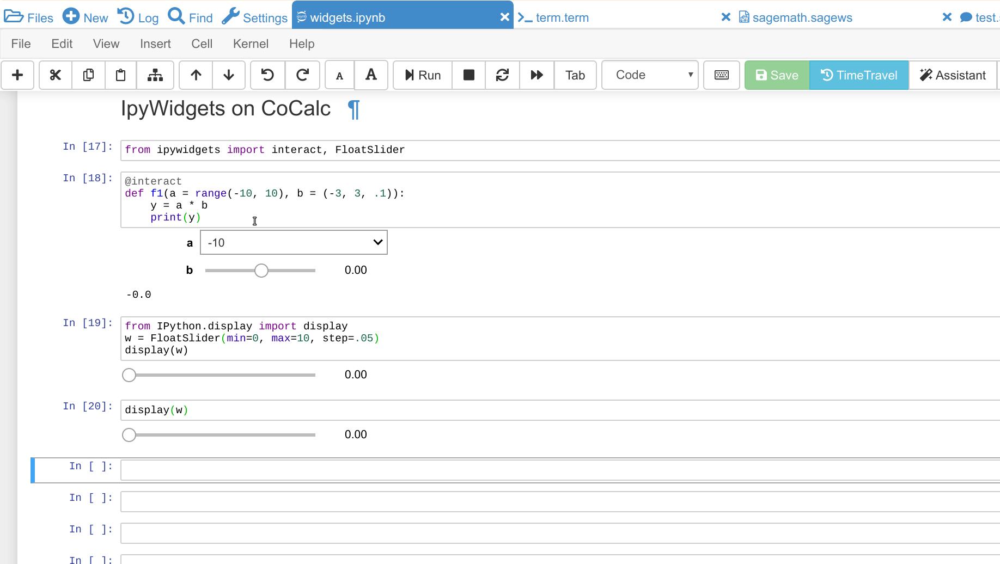

Software Updates 2019¶
2019-12-15: SymPy 1.5¶
- Python 3:
- (upd) sympy
1.5.0– SymPy 1.5 Release Notes
- (upd) sympy
- R bioconductor:
- Software:
- (upd) macaulay2
1.15 - various Linux package updates, including R packages
- (upd) xpra
3.0.3for Graphical Applications support - Node.js modules:
npm@6.13.4tldr@3.3.2reveal-md@3.4.1data-cli@0.9.6pm2@4.2.1webpack@4.41.2typescript@3.7.3
- (upd) macaulay2
2019-12-07: Design of Experiment Generator¶
- Python 3 (system-wide)
- (new) doepy
0.0.1: Design of Experiment Generator in Python (+ diversipy0.8dependency) - (new) pdpipe
0.0.32: Easy pipelines for pandas DataFrames - (upd) scikit-learn
0.22: scikit learn 0.22 release notes - (upd) nltk
3.4.5, pymc33.8, pytables3.5.2, dask/distributed2.9.0
- (new) doepy
- SageMath:
- (upd) development version
9.0.beta8
- (upd) development version
- Software:
- various Linux package updates, including R packages
2019-11-29: Julia 1.3¶
- Julia
- (new) Julia 1.3 now available: run
julia-1.3or the corresponding Jupyter kernel. It will become the default version soon! - (dep) Julia 1.2 is deprecated.
- (new) Julia 1.3 now available: run
- SageMath
(new) optional package pynormaliz – Normaliz backend for polyhedral computations:
sage: P = Polyhedron(vertices=[[0,0],[0,1],[1,0]], backend="normaliz"); P A 2-dimensional polyhedron in ZZ^2 defined as the convex hull of 3 vertices sage: P.ehrhart_series() 1/(-t^3 + 3*t^2 - 3*t + 1)
- Python 3 (Anaconda 2019)
- (upd) plotly
4.3.0
- (upd) plotly
2019-11-23: various Python 3 package updates¶
- Python 3 (system-wide)
- (upd) scientific: geopandas
0.6.2, pyomo5.6.7, pystan2.19.1.1, symengine0.5.1, cvxpy1.0.25, qutip4.4.1, qiskit0.13.0, qiskit-aer0.3.2, qiskit-aqua0.6.1, qiskit-terra0.10.0 - (upd) utils: dask/distributed
2.8.1, dill0.3.1.1, cytoolz0.10.1, psycopg22.8.4, fsspec0.6.0, gcsfs0.4.0
- (upd) scientific: geopandas
- Python 3 (Anaconda 2019)
- (upd) basic scipy
1.3.2, numpy1.16.5, xarray0.14.1, numba0.46.0 - (upd) scientific geopandas
0.6.2, pyproj2.4.1, pystan2.19.1.1, coverage4.5.4, dask2.8.0, datrie0.8, distributed2.8.0, llvmlite0.30.0, datashader0.8.0, django2.2.6, symengine0.5.0, emcee3.0.2, cvxpy1.0.25, fenics2019.1.0, kwant1.4.1, pyomo5.6.7, scikit-surprise1.1.0 - (upd) utils: joblib
0.14.0, cython0.29.1, folium0.10.0, cherrypy18.4.0, ipyleaflet0.11.4, psycopg22.8.4, qutip4.4.1, mpi4py3.0.2, natsort6.2.0, cytoolz0.10.1, memory_profiler0.56.0, petsc3.11.3, slepc3.11.2, dill0.3.1
- (upd) basic scipy
2019-11-19: improved support for Rust¶
- Software
- (new/upd) Rust available in stable, beta and nightly channels and code formatting (red arrow below) via
rustfmt!
~$ rustc --version rustc 1.39.0 (4560ea788 2019-11-04) ~$ rustc +beta --version rustc 1.40.0-beta.2 (2a0ba54fa 2019-11-16) ~$ rustc +nightly --version rustc 1.41.0-nightly (5c5b8afd8 2019-11-16)

Rust in a frame-editor, side-by-side with a Terminal
- (new/upd) Rust available in stable, beta and nightly channels and code formatting (red arrow below) via
- Python 3
- (upd) networkX
2.4, SQLAlchemy1.3.11, monty3.0.2, mypy0.740andmypy-extensions-0.4.3, plotly4.3.0
- (upd) networkX
2019-11-16¶
- Python 3
- (new) periodictable
1.5.1– The periodictable package provides an extensible periodic table of the elements prepopulated with data important to neutron and X-ray scattering experiments - (new) teneto
0.4.6– various tools for analyzing temporal network data - (new) python-highcharts
0.4.2– a simple translation layer between Python and Javascript for Highcharts projects (highcharts, highmaps, and highstocks) - (upd) scipy
1.3.2, numpy1.17.4, dask/distributed2.7.0 - (upd) data science libs: sklearn-porter
0.7.3, sklearn-pandas1.6.0, scikit-image0.16.2scikit-posthocs0.6.1 - (upd) scikit-surprise
1.1.0– a Python scikit building and analyzing recommender systems that deal with explicit rating data - (upd) Pandas related: pandas
0.25.3, pandas-bokeh0.4, pandas-datareader0.8.1, pandas-gbq0.11.0 - (upd) Google GCP libs: google-api-core
1.14.3, google-cloud-bigquery1.21.0, google-cloud-core1.0.3, google-cloud-storage1.22.0, googleapis-common-protos1.6.0
- (new) periodictable
2019-11-09¶
- Platform:
- (new) Multifile LaTeX Support ( announcement ) – open the master file and once it compiled once, you can switch between child tex files, edit them side-by-side, etc.
- Software:
- (upd) Jupyter Lab
1.1.4 - (upd) Node.js related
coffeescript@2.4.1,typescript@3.7.2, andnpm@6.13.0
- (upd) Jupyter Lab
- Python3:
- (upd) Tensorflow 2
tensorflow-2.0.0,tensorboard-2.0.1,tensorflow-estimator-2.0.1, … (Tensorflow 1 is still available in the Anaconda 2019 kernel) - (new) ortools
7.4.7247– a fast and portable software for combinatorial optimization - (upd) Cython
0.29.14, joblib0.14, numpy1.17.3, h5py2.10.0, keras2.3.1
- (upd) Tensorflow 2
- SageMath:
- (upd) Development version
9.0.beta4
- (upd) Development version
2019-10-25¶
- Platform
- (new) Sytnax highlighting for Verilog files (
.vand.vh) - (enh) TimeTravel opens up in a frame
- (new) Sytnax highlighting for Verilog files (
- Software
- (new) iverilog – compiles Verilog (IEEE-1364) into some target format
- (new) GTKWave (in Graphical Applications) for viewing Verilog VCD/EVCD files
- SageMath:
- (fix) hotfix for viewing
plot3drenderings in the Jupyter Notebook – issue #28648
- (fix) hotfix for viewing
2019-10-19¶
- Python 3:
- (ann) soon, Tensorflow will be version 2 – this has breaking changes
- (new) tpot
0.10.2– is a Python Automated Machine Learning tool that optimizes machine learning pipelines using genetic programming. - (new) scikit-mdr
0.4.4– a scikit-learn-compatible Python implementation of Multifactor Dimensionality Reduction (MDR) for feature construction. - (new) scikit-rebate –
0.6a scikit-learn-compatible Python implementation of ReBATE, a suite of Relief-based feature selection algorithms for Machine Learning - (upd) dask/distributed
2.6.0, numba0.46.0, textract1.6.3, beautifulsoup44.8.0, pytables3.5.2, xgboost0.90andpip 19.3
- Anaconda 2019:
- (new) tpot
0.10.2
- (new) tpot
2019-10-11¶
- Platform
- (enh) CoCalc’s NbGrader: updates about its development status.
- (enh) CoCalc’s LaTeX Editor moved it’s build directory to a temporary in-memory location at
/tmp/.... Less clutter, more speed! - (new) CoCalc Docker mailing list: join here
- SageMath
- (upd) admcycles
0.2in Sage 8.8 and 8.9 - (upd) Development version
9.0.beta0
- (upd) admcycles
- Software
- (upd) various Linux package updates, including xpra 3.0 and R packages. The Xpra update contains various improvements for the remote graphical desktop.
- (upd) bazel
1.0.0

2019-10-05¶
- Platform
- (new) The
$MPLBACKENDenvironment variable is set for matplotlib based on the terminal type. This means you can plot to a file or to a graphical window in X11 without having to explicitly set it (ticket #4120).
- (new) The
- SageMath
- (new) SageMath
8.9rollout on CoCalc, including additional packages and extensions. Try the “Sage 8.9” Jupyter Kernel! Soon, it will become the default version for running Sage. Sage Worksheets currently do not support Sage 8.9.
- (new) SageMath
- Anaconda Python 3:
2019-09-30¶
- Software
- (upd) Jupytext
1.2.4– a command-line tool to convert ipynb files to markdown, Rmarkdown, etc. - (fix) Updating Jupyter Console, because the previous update broke it.
- (upd) Jupytext
- Julia:
- (upd)
1.0.5Long Term Release - (upd) various packages for
1.2.0
- (upd)
2019-09-28¶
- CoCalc platform:
- CoCalc’s Jupyter Notebook’s nbgrader toolbar inserts templates for automatically graded answers and corresponding tests for Python, R and Julia. This makes creating new test cells for your course assignments much easier!
- Software:
(new) IPOPT interior point solver, stand-alone binary:
~$ ipopt --version Ipopt 3.12.12 (Linux x86_64), ASL(20160307)
- Anaconda 2019:
- (new) tools for all your SOAP needs: suds-jurko and zeep
- (new/upd) IPOPT
3.12.12,coincbc 2.10.3,glpk 4.65, and pyomo - (upd) wide range of package updates. from dask
2.4.0, over matplotlib3.1.1, to tensorflow1.14, and many more …
- Python 3:
(new) Tools for all your SOAP needs: suds-community
0.8.3and zeep3.4.0(new) IPOPT: interior point solver, see ipopt examples using cyipopt bindings – also available via PyOMO
5.6.6. This allows you to solve more types of optimization problems.(upd) scikit-learn 0.21.3, scipy
1.3.1, mypy0.730(upd) Continuing from last update’s introduction of pandas-bokeh, also bokeh got updated to
1.3.4(bokeh example notebook). This lets you create interactive plots of various types right inside CoCalc’s Jupter Notebook.
2019-09-21¶
- Python 3
(new) pandas-bokeh
0.3
(new) pyswarms – an extensible research toolkit for particle swarm optimization (PSO) in Python
(new) music
(upd)
xlrd-1.2.0,distributed-2.4.0
- R (system-wide)
- (upd) various packages, including BioConductor
- (new) installing oligo
1.48.0and some other BioConductor packages
- Sage Development version
8.9.rc0 - Custom Software Environments:
- (upd)
ModSimPyto enable ipynb to PDF exports
- (upd)
2019-09-09¶
- Software:
- (upd) TypeScript
3.6.2 - (upd) prettier
1.18.2 - (upd) Selenium
4, ChromeDriver76, GeckoDriver1.16.2 - (upd) Spyder
3.3.6 - (upd) various Linux package updates, including some R packages
- (upd) TypeScript
- Python 3:
- (new) arch
4.9.1: Autoregressive Conditional Heteroskedasticity (ARCH) and other tools for financial econometrics, written in Python (with Cython and/or Numba used to improve performance) - (new) linearmodels
4.13: Linear (regression) models for Python. Extends statsmodels with Panel regression, instrumental variable estimators, system estimators and models for estimating asset prices. - (upd)
pip 19.2.3 - (upd) pandas
0.25.1andpandas-datareader-0.7.4 - (upd) psycopg2
2.8.3 - (upd) numpy
1.17.2 - (upd) matplotlib
3.1.1 - (upd) pytest
5.1.2+ associated libraries - (rem)
axelrodblocks updates, use Anaconda 2019
- (new) arch
- Anaconda 2019:
- (new)
contextily 1.0rc2+geopy 1.20.0
- (new)
2019-08-28¶
- Python 3:
- (new) pomegranate: implements fast and flexible probabilistic models ranging from individual probability distributions to compositional models such as Bayesian networks and hidden Markov models
- (upd) Cython
0.29.13 - (upd) RISE
5.5.1
- Julia 1.2:
- (upd) JuMP
0.20.0
- (upd) JuMP
- Jupyter Classic:
- (fix) re-enabling
nbextensionsconfigurator
- (fix) re-enabling
2019-08-25¶
- CoCalc Platform
- (new) Jupyter Notebooks Table of Contents (initial release). Structure large notebooks using headers in Markdown cells and then use the ToC to navigate more easily.
- (new) Premium Course Plan to upgrade your course beyond “Basic” and Standard”.
- Anaconda 2019
- (upd) various package update, e.g.
scipy 1.3.1,scikit-image-0.15.0,pandas 0.25.0, …
- (upd) various package update, e.g.
- Python 3:
- (upd) Tensorflow
1.14 - (upd) Numpy
1.16.4 - (upd) Scikit Image
0.15 - (upd) Astroalign
2.0 - (upd) Qiskit related package updates
- (upd) Keras
2.2.5 - (new) AsyncIO related:
aiohttpandcurio - (upd) several other support libraries, .e.g
jinja2-2.10.1
- (upd) Tensorflow
- SageMath
- (new) Package admcycles
- Software
- (upd) GAP
4.10.2 - (upd) Jupyter Lab
1.0.6
- (upd) GAP
- Julia
- (new) Julia 1.2
- (dep) deprecation of
Julia 1.1.x. Only1.0.xw/ LTS remains,1.1will be removed soon. - (new) Julia 1.2: HomotopyContinuation
- Custom Software Environments:
- (upd) “Tensorflow 2”
2.0.0-rc0: the first release candidate for2.0.0
- (upd) “Tensorflow 2”
- API:
- (enh) Scheduled copy operations
- (new) copy_path_status and copy_path_delete
2019-08-10¶
- Julia:
(new) Package Gen in Julia 1.1
“A general-purpose probabilistic programming system with programmable inference.”
- Sagemath:
- (new)
TIDESpackage, providing desolve_tides_mpfr - (upd) Development version
8.9.beta5
- (new)
- Python
- (upd)
pip-19.2.1,dask-2.2.0,distributed-2.2.0,numba-0.45.1
- (upd)
- Software:
- (new) GRASS GIS:
grass 7.4.0,grass-gui, etc. +grass-sessionin Python 2 - (upd)
npm@6.10.3
- (new) GRASS GIS:
2019-07-28¶
- SageMath
- (del) removing packages
meataxeandp_group_cohomologyto avoid a bug.
- (del) removing packages
- Python 3:
- (new) Anaconda 2019 – a fresh setup from scratch! It provides Python 3.7 and replaces the Anaconda 5 environment.
- (rem) Removal of Anaconda3 – it was deprecated and notebooks will tell you to switch the kernel to Anaconda 2019.
- (dep) Deprecation of Anaconda 5 starts now.
- (upd) numba
0.44.1andllvmlite-0.29.0 - (upd)
plotly 4.0.0– Plotly 4.0 release notes
- Software:
- (upd) Linux package update, including some R packages
- (upd) yapf
0.28,git-lfs 2.8.0andxpra 2.5.3
2019-07-15¶
- CoCalc Platform
- (new) Jupyter NBGrading: initial support for creating test cells via the NBGrader toolbar and running validation tests in the notebook.
- (new) Dedicated VMs: get your own node in CoCalc’s cluster – pricing info.
- (chg) Jupyter Kernels: renaming “Python 2/3 (Ubuntu Linux)” to “Python 2/3 (system-wide)”. There is no change except for the naming.
- Library update, adding NBGrader examples
- R Statistical Software:
(upd) Version 3.6.1 and 4000+ packages
Note
Compiled packages in projects need to be reinstalled!
- Python 3:
- (new) NEURON – see howto NEURON on CoCalc
- (upd) JAX
0.1.39,jaxlib-0.1.21 - (upd)
mypy-0.720(Mypy: New semantic analyzer),typed-ast-1.4.0,typing-extensions-3.7.4
- SageMath:
- (upd) Sage Development version
8.9.beta2
- (upd) Sage Development version
- Software:
- (upd)
npm 6.10.0and a couple of global npm packages, e.g.typescript 3.5.3 - (upd) general Linux package update, including
bazel 0.28and Rust1.34
- (upd)
2019-07-08¶
- SageMath:
- (new) Version 8.8 becomes the default
- (upd) Development Version
8.9.beta1
- Python 3:
- pip-upgrader: helps managing custom package setups in virtual environments
- Updating all Custom Software Environments.
2019-06-30¶
(new) SageMath 8.8: general available on CoCalc with various enhancements. When the testing phase passes, it’ll be the default (in about a week). (Sage 8.8 Notebook)
Python 3:
- (upd): Dask 2.0:
dask-2.0.0distributed-2.0.1,dask-jobqueue-0.5.0, anddask-ml-1.0.0 - (new) tensorly
0.4.3(TensorLy example)
- (upd): Dask 2.0:
Linux package update, including
imagemagick-6 6.9.7.4.
2019-06-24¶
- SageMath:
- (upd) Development Version
8.8.rc0
- (upd) Development Version
- Python 3:
- (new) jieba
0.39: “结巴”中文分词：做最好的 Python 中文分词组件
- (new) jieba
- Julia 1.1:
- (new) Distributions
- (upd) all other global Julia packages, if applicable
2019-06-17¶
2019-06-08¶
- Software:
- pandoc
2.7.2
- pandoc
- Custom Software Environments:
- Updating Tensorflow 2 to
2.0.0-beta0
- Updating Tensorflow 2 to
2019-06-02¶
- R:
- IRkernel 1.0.1,
IRDisplay 0.7.0,repr 1.0.1,pillar 1.4.1, andvctrs 0.1.0– this solves certain rich object representation issues
- IRkernel 1.0.1,
2019-05-26¶
- CoCalc
- (new/beta) Custom Software Environments: bundle software environment configurations (compatible with Binder) with accompanying content to run.
- Julia:
- (upd) language
1.0.4LTS and1.1.1: release notes julia 1.0.4 and 1.1.1
- (upd) language
- Python 3:
- (upd) SciPy 1.3.0
- (upd) statsmodels updated to recent development version, because of a SciPy incompatibility.
- (upd) cvxpy 1.0.23
- (upd) scikit-learn 0.21.2
- (upd)
matplotlib 2.2.4 - (upd) Dask
1.2.2,dask-ml 0.13.0, anddistributed 1.28.1 - (upd) OpenCV
4.1.0.25(inclopencv-contrib-python) - (upd) pip 19.1.1 (also for python 2)
- (upd)
pytest-4.5.0,pytest-arraydiff-0.3,pytest-astropy-0.5.0,pytest-cov-2.7.1,pytest-doctestplus-0.3.0,pytest-forked-1.0.2,pytest-html-1.20.0,pytest-ipynb-1.1.1,pytest-metadata-1.8.0,pytest-mock-1.10.4,pytest-openfiles-0.3.2,pytest-remotedata-0.3.1,pytest-repeat-0.8.0,pytest-selenium-1.16.0,pytest-timeout-1.3.3, andpytest-xdist-1.28.0 - (new)
pytest-watch-4.2.0andpytest-testmon-0.9.16 - (new)
nest-asyncio-1.0.0,osbot-aws-0.6.51,osbot-browser-0.3.1,osbot-jupyter-0.4.2,pyee-6.0.0, pyppeteer0.0.25, and syncer1.3.0 - (upd/new) geopandas related: contextily
0.99.0, pysal2.0.0(major version update!),esda-2.0.0,libpysal-4.0.1mercantile-1.0.4andpalettable-3.1.1 - (new) scikit-rf
0.14.9– package for RF/Microwave engineering (also for Anaconda 5). Scikit RF example
- SageMath:
- (upd) development version
8.8.beta6
- (upd) development version
- Linux Software Updates:
rustc1.32 /cargo0.33bazel0.25.3
2019-05-18¶
- Sage:
- updating development version to
8.8.beta5
- updating development version to
- Python 3:
- (new) Google Spreadsheet API libs: gspread and pygsheets
- (new) imbalanced learn
- (new) memory profiler for Jupyter Notebooks: %memit example
- (upd)
geographiclib-1.49,geopy-1.19.0, geopandas0.5.0
- Software
- (new) more BibTeX related packages:
search-ccsb,search-citeseer,bibtool,kbibtex,bibclean,bibcursed,bibtex2html, andbibtexconv
- (new) more BibTeX related packages:
2019-05-11¶
- CoCalc:
ipywidgets support in CoCalc’s Jupyter notebooks. This isn’t 100% done, but suitable for all basic applications. The coolest part? It syncs across all collaborators of the same notebook!

Python 3:
- (upd) Qiskit 0.10.1 and deps:
fastdtw-0.3.2,pyeda-0.28.0,pylatexenc-1.4,qiskit-aer-0.2.0,qiskit-aqua-0.5.0,qiskit-chemistry-0.5.0,qiskit-ibmq-provider-0.2.2,qiskit-ignis-0.1.1,qiskit-terra-0.8.0 - (upd) VQE Playground and PyGame 1.9.6
- (upd) Qiskit 0.10.1 and deps:
Anaconda 5 environment:
Adding RDKit, updating matplotlib, …:
The following NEW packages will be INSTALLED: lame conda-forge/linux-64::lame-3.100-h14c3975_1001 matplotlib-base conda-forge/linux-64::matplotlib-base-3.0.3-py36h5f35d83_1 pycairo conda-forge/linux-64::pycairo-1.18.1-py36h438ddbb_0 rdkit conda-forge/linux-64::rdkit-2019.03.1-py36h9c20d5c_0 The following packages will be UPDATED: cairo 1.14.12-h80bd089_1005 --> 1.16.0-ha4e643d_1000 dbus pkgs/main::dbus-1.13.2-h714fa37_1 --> conda-forge::dbus-1.13.6-he372182_0 ffmpeg 4.0.2-ha0c5888_2 --> 4.1.3-h167e202_0 glib 2.56.2-had28632_1001 --> 2.58.3-hf63aee3_1001 gnutls 3.5.19-h2a4e5f8_1 --> 3.6.5-hd3a4fd2_1002 gst-plugins-base pkgs/main::gst-plugins-base-1.14.0-hb~ --> conda-forge::gst-plugins-base-1.14.4-hdf3bae2_1001 gstreamer pkgs/main::gstreamer-1.14.0-hb453b48_1 --> conda-forge::gstreamer-1.14.4-h66beb1c_1001 harfbuzz 1.9.0-he243708_1001 --> 2.4.0-h37c48d4_0 libxml2 2.9.8-h422b904_5 --> 2.9.9-h13577e0_0 matplotlib 2.2.3-py36h8e2386c_0 --> 3.0.3-py36_1 nettle 3.3-0 --> 3.4.1-h1bed415_1002 opencv 3.4.4-py36_blas_openblashbbbf1d5_201 --> 3.4.4-py36_blas_openblash641cfe3_1205 pango 1.40.14-hf0c64fd_1003 --> 1.40.14-h4ea9474_1004 pyqt 5.6.0-py36h8210e8a_7 --> 5.9.2-py36hcca6a23_0 qt pkgs/main::qt-5.6.3-h8bf5577_3 --> conda-forge::qt-5.9.7-h52cfd70_1 sip 4.18.1-py36hfc679d8_0 --> 4.19.8-py36hf484d3e_1000 x264 1!152.20180717-h470a237_1 --> 1!152.20180806-h14c3975_0 The following packages will be DOWNGRADED: poppler 0.67.0-h2fc8fa2_1002 --> 0.67.0-h2ad7f00_6
{kind=link}
2019-05-04¶
- Python 3:
- (upd) PyGame 1.9.4
- (upd)
pip-19.1 - (upd) Dask 1.2.0,
dask-ml-0.12.0anddistributed-1.27.0 - (upd) rpy2-2.8.6 (the latest release)
- (upd)
selenium-3.141.0in combination with chromedriver
- R:
- (new) ggformula 0.9.1: Provides a formula interface to ‘ggplot2’ graphics + ggstance, …
- (upd) tidyverse 1.2.1 and
ggplot 3.1.1
- Node.js: (upd)
chromedriver@74.0.0 - Linux package updates:
fenics 1:2019.1.0,gcc 8.3, andgcc 7.4forg++andgfortran, …
2019-04-27¶
2019-04-21¶
- Python 3:
- (upd) pandas 0.24.2: check pandas release notes for changes since 0.23.
- (new) umap-learn (UMAP example): Uniform Manifold Approximation and Projection (UMAP) is a dimension reduction technique that can be used for visualisation similarly to t-SNE, but also for general non-linear dimension reduction.
- R:
- (new) Seurat 3.0.0: A toolkit for quality control, analysis, and exploration of single cell RNA sequencing data. <https://satijalab.org/seurat/>
- (new) bibliometrix <https://cran.r-project.org/package=bibliometrix>: An R-Tool for Comprehensive Science Mapping Analysis
- Software:
- (new)
ttf-mscorefontsLinux package to provide more fonts, primarily for XeLaTeX. - (upd) routine Linux package update, including
xpra-2.5.1.
- (new)
2019-04-14¶
- SageMath 8.7
- (new) package
plot3Din Sage’s R, along withtidyverseanddplyr
- (new) package

- Anaconda 5:
- (new) additionally to hoomod blue,
freud-1.0.0,fresnel-0.8.0,embree3-3.5.2, andgsd-1.6.1
- (new) additionally to hoomod blue,
- Library:
- all entries are updated to their latest upstream version
- adding VQE Playground: gaining intuition about Variational Quantum Eigensolver
- R:
- (upd) also updating
tidyverseanddplyr
- (upd) also updating
2019-04-07¶
- SageMath 8.7 is the default
sage. - You can still use the previous one via
sage-8.6, select the appropriate kernel, or switch it in your project by runningsage_select 8.6in a Linux Terminal. - SnapPy tests do not pass, I don’t know why …
- You can still use the previous one via
- SageMath 8.7 is the default
- R (R-Project):
- (upd) bioconductor packages,
in particular
affy,limma,puma, etc.
- (upd) bioconductor packages,
in particular
- Python:
- (upd/py3)
mypy-0.700– MyPy 0.700 release notes - (new)
opencv-contrib-python– https://pypi.org/project/opencv-contrib-python/
- (upd/py3)
- Software:
- Spyder IDE 3.3.4 (via X11) and Python 3 deps:
PyQt5-sip-4.19.15,pyqt5-5.12.1,pyqtwebengine-5.12.1,qtawesome-0.5.7,qtpy-1.7.0,spyder-kernels-0.4.3, andwurlitzer-1.0.2. - VS Code 1.33
- Gyoto
- Spyder IDE 3.3.4 (via X11) and Python 3 deps:
2019-03-31¶
- CoCalc UI:
- (new) “TimeTravel export”: https://doc.cocalc.com/howto/export-timetravel.html
- (new) new Jupyter Notebooks explicitly ask for the Jupyter Kernel (i.e. no memorized default)
- file listing speed improvements
- Jupyter Notebook related Python 2 Kernel changes:
python2changes to use the system-wide Python 2 environment;python2-sagemaththe Python environment of SageMath (formerlypython2);- existing
python2-ubunturemoved, use “Python 2 (Ubuntu Linux)”
- Python 3:
- (new)
dit-1.2.3: discrete information theory - (new)
skyfield-1.10: https://rhodesmill.org/skyfield/: Elegant Astronomy for Python: Skyfield computes positions for the stars, planets, and satellites in orbit around the Earth. Skyfield Demo – deps:jplephem-2.9andsgp4-1.4 - (upd) tensorflow related:
tensorflow-1.13.1,tensorboard-1.13.1,tensorflow-estimator-1.13.0andtensorflow-probability-0.6.0– https://www.tensorflow.org/probability/overview - (upd)
numba-0.43.1andllvmlite-0.28.0
- (new)
- Julia 1.1 (new/upd):
- Images
- Primes
- LightGraphs
- Flux – The Elegant Machine Learning Stack
- and
DiffEqFlux– https://julialang.org/blog/2019/01/fluxdiffeq - Knet
- Turing – a language for probabilistic programming
- StatsPlots,
- more from JuliaOpt,
Convex,BlackBoxOptimandNLsolve - and some more updates like
IJuliafor the notebook. - There are also less issues installing custom packages in a notebook via
Pkg.add(), becauseJULIA_PROJECTis set to/home/user/.julia/environment/v1.0or./v1.1(see julia discourse 13922/27)
- SageMath:
- Version 8.7: initial deployment, still needs testing. Try it and give us feedback! – SageMath 8.7 demo.
- (upd) Development version to 8.8 beta0 (Python 3)
- Software, Linux package updates:
rustc1.31,cargo0.32,bazel0.24, …
2019-03-23¶
- (UI/LaTeX) LaTeX editor: “shell-escape” mode to e.g. draw plots using Gnuplot
- (UI/Chat) @Mention a project collaborator in a chat to ping her/him via email.
- (new) ROOT Kernel: ROOT is a modular scientific software toolkit. It provides all the functionalities needed to deal with big data processing, statistical analysis, visualization and storage. ROOT example Jupyter worksheet
- (new) rclone – rsync for cloud storage
- R: installing qdap library and updating a couple of other ones …
- Python 3:
Sphinx1.8.5 - Julia 1.1: adding
Imagesand updating various packages like JuMP 0.19! - Linux: various package updates, in particular
bazel0.23.2,xpra2.5, git-lfs2.7.1, andcode1.32 - (upd) SageMath Development version 8.7.rc0
2019-03-11¶
- Python:
tzwhere-3.0.3(new for py2 and py3) – https://github.com/pegler/pytzwheretyping-extensions-3.7.2(Py3) for MyPy
- Software:
ts-nodeto run TypeScript files from the command line more easily- updating
npmto version 6.9.0
- Disabling jupyter lab drawio, because it didn’t build correctly
2019-03-02¶
- Software:
- Dr. Racket 7.2.0 – https://racket-lang.org/ (Open/create an Graphical Applications file and run
drracketin the Terminal) datacommand-line utility to work with https://datahub.io/ – a service like GitHub but for data and alsodatapackagePython 3 library (datapackage demo)reveal-md3.0.1- various linux package updates, e.g.
qgis/libqgis3.6.0,postgresql11.2,git-lfs2.7.0, …
- Dr. Racket 7.2.0 – https://racket-lang.org/ (Open/create an Graphical Applications file and run
- Python 3:
- new
mlxtend 0.15: Mlxtend (machine learning extensions) is a Python library of useful tools for the day-to-day data science tasks. (also available in Anaconda 5), mlxtend demo distributed 1.26pefile-2018.8.8– https://github.com/erocarrera/pefileCython-0.29.6turicreate-5.3.1– https://github.com/apple/turicreatepyvis-0.1.5.0– https://pyvis.readthedocs.io/en/latestscikit-learn-0.20.3– https://scikit-learn.org/stable/pydicom 1.2.2– https://pydicom.github.io/pydicom/stable/index.htmlpdfkit-0.6.1
- new
- Python 2:
pefile-2018.8.8– https://github.com/erocarrera/pefileturicreate-5.3.1– https://github.com/apple/turicreate (our MXNet is slightly too new)
- Classical Jupyter:
hide_codeextension – https://github.com/kirbs-/hide_code - SageMath Development Version 8.7.beta5
2019-02-23¶
- Sage Development Version 8.7.beta4
- Python:
- pygame 1.9.4 – open an Graphical Applications environment and use the Linux Terminal on the left to launch it
- qiskit-0.7.3
pip2andpip319.0.3
- Fixing an inconsistency with nbgrader in Classical Jupyter
2019-02-16¶
- New SPARQL kernel: see issue #3573. You can query remote endpoints. Make sure your project has internet access enabled! (SPARQL demo notebook)
- LEAN 3.4.2, with a precompiled mathlib in
/ext/lean/lean/mathlib. - Python 3 changes:
- JAX (jax demo worksheet)
- tornado 5.1.1, distributed 1.25.3
- mypy 0.6.7.0
- cython-0.29.5
- pylint-2.2.2
- requests-2.21.0
- scipy-1.2.1 (see 1.2.0 and 1.2.1 notes)
- mesa-0.8.5
- Sphinx-1.8.4 (update) and commonmark 0.8.1 and recommonmark-0.5.0 for developing sphinx-rtd-theme-0.4.3 out of the box!
- cookiecutter-1.6.0
- wordcloud-1.5.0
- Python 2 changes: scipy-1.2.1, decorator-4.3.2, networkx-2.2, keras-applications-1.0.7, keras-preprocessing-1.0.9, tensorflow-1.12.0
- Sage’s Python2: pip-19.0.2, PySingular-0.9.7, soupsieve-1.7.3, and a couple of dependencies
- Linux: PyPy 7.0.0 and a set of minor linux package updates
- Node: npm 6.8.0
2019-02-09¶
- (Python3)
- new: pyfftw 0.11.1, pymp-pypi 0.4.2
- updates: dask-1.1.1
- (Node): npm 6.7.0
- (Julia): making Julia 1.1.0 the default (v1.1.0 release notes) and removing older, no longer maintained versions. Maybe cleanup the build cache, by running
rm -rf ~/.juliain the Terminal/Miniterm. - (Anaconda 5): various updates to packages
- (Sage) Development version 8.7 beta 3 (Python 3)
2019-01-26¶
- (sage): Sage 8.6 is the default! (use
sage_select 8.4to switch back). Enjoy the shorter startup time, which also speeds up compiling SageTeX documents! - A Python3 version of Sage 8.6 is also available:
sage-8.6-py3or in a Jupyter Notebook:sagemath-8.6-python3.ipynb(this is experimental).
- A Python3 version of Sage 8.6 is also available:
- (sage): Sage 8.6 is the default! (use
- (py3):
- new:
- ipyvolume 0.5.1 (demo notebook, requires the plain jupyter server!)
- qiskit-chemistry 0.4.2 – a set of tools, algorithms and software to use for quantum chemistry research
- PySCF – a simple, light-weight, and efficient platform for quantum chemistry calculations
- updated:
pip319.0.1- qiskit 0.7.2, qiskit-aqua 0.4.1
- scikit-bio 0.5.5
- dask 1.1.0
- nbgrader 0.5.5
- ipython 6.5.0
- Cython 0.29.2
- setuptools 40.6.3
- tensorboard 1.12.2
- tmuxp 1.4.2
- axelrod 4.4.0
- (R):
- new:
- styler 1.1.0 – will be used soon to format R code; tidyverse styleguide
- usethis 1.4.0
- tidytransit
- updated: knitr 1.21, ggplot 3.1.0, data.table 1.20.0, dplyr 0.7.8, Rcpp 1.0, rlang 0.3.1, forecast 8.5, psych 1.8.12, plotly 4.8, yaml 2.2
- (Julia): new: D4M package – Dynamic Distributed Dimensional Data Model
- (node/upd): npm 6.6.0, TypeScript 3.2.4, tslint 5.12.1, forever 0.15.3, CoffeeScript 2.3.2, reveal-md 2.4.1, prettier 1.16.0, tldr 3.2.6, docsify-cli 4.3.0, chromedriver 2.45.0
- (Linux) various system packages, noteworthy: xpra 2.4.3
2019-01-20¶
(new) SageMath version 8.6 (sage-8.6) + Jupyter Kernel available (not the default yet!)
(new) Cadabra2 _”a field-theory motivated approach to computer algebra”_ available via
cadabra2or in an X11 desktop ascadabra2-gtk(screenshot)(chg) As announced previously, Julia version 1 is the default now. Symlink
~/bin/juliatojulia-0.7if you need to switch back.(new): Julia 1 packages: SymPy, Combinatorics, UnicodePlots, Bokeh and Nemo
(py3):
new:
- surprise 1.0.6
- python-twitter 3.5
- mlrose 1.0: Machine Learning, Randomized Optimization and SEarch. example
updates:
{kind=link}
2019-01-12¶
- (r): Rstan 2.18.2 → demo worksheet, with some setup instructions specific to CoCalc
- (py2/py3): PyStan 2.18.1 (demo pystan.ipynb)
- Julia 1: * JuMP & Ipopt (demo julia-1-jump.ipynb) * We’ll also switch the default version of Julia to be 1.0.x soon!
- Linux updates, notably bazel 0.21
- Fonts: ocr-a, ocr-b, opendyslexic, mononoki, comic-neue, linex, roboto, vollkorn, tuffy. Testing some fonts in LuaTeX (tex source)
2019-01-06¶
- Julia 1.0.3: comes with packages PyPlot, Plots, DifferentialEquations, Compat, LinearAlgebra, GLM, etc. now!
- Sage development version 8.6.rc0